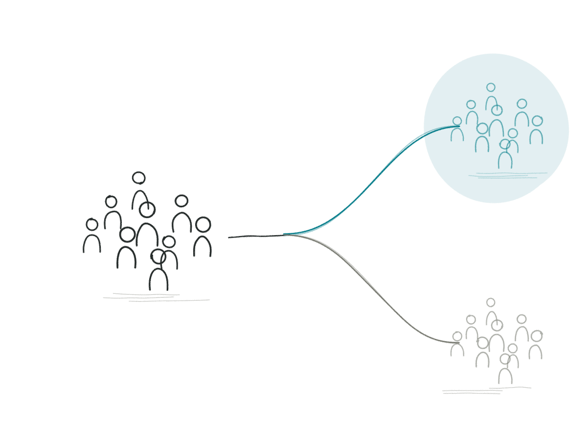

The patients lived longer. Did the treatment help?
Susan sees longer survival among patients who received Treatment X. But fitter patients were more likely to receive it, and might have lived longer either way.
Follow her from that information gap to a comparison she can defend, then test the methods against a known truth. The people, treatments and data here are fictional.
What would happen to these same patients under the other option?
That is Susan’s causal question. Each person receives only one treatment, so their alternative outcome is unobserved. She can still ask about an average: how would survival differ if the same eligible population received X rather than the comparison treatment?
Her first obstacle is confounding. Baseline fitness affects both treatment choice and survival. She can account for recorded common causes, but a missing cause can bias every method she tries. More accurate outcome prediction alone cannot settle that problem.

Compare two treatment worlds for the same population. The records show only the path each person took.
Begin with the trial she would want to run.
Following Dang and Balzer, Susan specifies the target-trial protocol, then follows the broader causal roadmap. The protocol clarifies eligibility, strategies, time zero and outcomes. Identification asks what assumptions let her learn the intended effect from the records.
Confounding: a defensible account of treatment choice, including the common causes the records miss.
Positivity: both options are possible for the patient groups in the question.
Consistency: the treatment labels correspond to the specified strategies.
Follow-up: conditional on the variables used, censoring carries no further information about survival, with enough chance of remaining observed to each horizon.
These are assumptions to defend and challenge. A well-fitted model does not verify them.
Thought experiment One average, different individual effects
These ten invented records illustrate the missing counterfactual at one fixed horizon, with no censoring. This thought experiment uses its own teaching data. Start with the observed records, then compare two possible completions of what is missing.
Bold teal outcomes are observed. Question marks are missing. Dotted, italic outcomes are hypothetical completions.
We observe 3 of 5 treated people alive and 2 of 5 control people alive. That observed contrast alone does not identify the causal effect. Ten alternative outcomes remain missing.
2 helped · 0 harmed · 8 unchanged. If all ten received treatment, 6 would survive; under control, 4 would survive. The sample average effect is (6 − 4) / 10 = +20 percentage points.
4 helped · 2 harmed · 4 unchanged. Again, 6 would survive under treatment and 4 under control: +20 percentage points. The same average hides a different set of individual effects.
The observed outcomes and treatment assignments stay identical in both possible worlds.
Person
Received
If treated
If control
01
Treatment
Alive
?
02
Treatment
Alive
?
03
Treatment
Alive
?
04
Treatment
Died
?
05
Treatment
Died
?
06
Control
?
Alive
07
Control
?
Alive
08
Control
?
Died
09
Control
?
Died
10
Control
?
Died
Here “helped” means alive under treatment and dead under control at this horizon; “harmed” means the reverse. Neither completion is an estimate or a recovered truth. Other completions could also change the average. Even knowing both marginal survival probabilities would not reveal how the two outcomes pair within people.
One summary can hide when a benefit appears or fades.
Susan wants to know how much treatment changes the chance of being alive at one, three or five years. A single hazard ratio describes a different contrast: relative event rates among those still at risk.
Even a constant hazard ratio can imply a changing survival difference. If treatment helps early and harms later, a conventional Cox model with one treatment coefficient cannot represent that reversal. Susan keeps the follow-up horizon visible in her question.
A constant hazard ratio of 0.5 can still produce an absolute survival difference that rises and falls. This illustration is computed from a specified survival model, not estimated from the cohort.
Can a Cox model still be useful?
Yes. A well-specified Cox model can estimate survival curves and standardized survival differences. Proportional hazards concerns the hazard ratio over time; it does not require identical absolute benefits for everyone. Interactions or time-varying coefficients extend the model. Whatever the model, a causal interpretation still needs the study design and identification assumptions.
What does each tool estimate, and where can it fail?
Susan compares tools on the same target: survival differences at chosen horizons. Each has a job and a way it can mislead her.
Methods in the teaching examples
Tool
What it returns
What can go wrong
Unadjusted comparison
The observed survival gap between groups.
Treatment selection can create a gap even without a treatment effect.
Cox model
Hazard ratios and model-based survival curves, which can be standardized to a target population.
Misspecified relationships or proportional hazards can distort the target contrast. Adjustment does not remove unmeasured confounding.
Prediction forests (RSF)
Survival predictions, with treatment as an input or a separate model in each arm.
Good prediction does not ensure accurate treatment-effect estimation or valid causal assumptions.
Causal survival forest (CSF)
Effect estimates at specified horizons, accounting for treatment assignment and censoring under assumptions.
Hidden confounding, poor overlap, sparse follow-up or poorly learned nuisance models can undermine estimates and intervals.
CAST
A smooth trajectory fitted to CSF estimates across horizons, using their covariance.
The trajectory model can miss the shape of the effect. A smooth, narrow band can still miss the truth.
CSF estimates the gaps at selected horizons. CAST connects those estimates through a trajectory model.
What is specific to this implementation?
This demo fits a quadratic CAST trajectory by generalized least squares using estimated covariance across five horizon estimates. Between-horizon values depend on that model. The band is pointwise, not simultaneous, and does not fully account for approximation or model-selection uncertainty.
All examples here compare a decision made at baseline. Treatment strategies that change as health evolves need a longitudinal target and suitable methods, such as longitudinal TMLE or modified treatment policies. That is a different analysis.
These are precomputed simulated studies, so we know each scenario’s true average effect. Change one feature, predict what will happen, then reveal the truth. Each panel is one study, not a repeated-sampling validation.
A familiar model: choose benefit throughout follow-up and show Cox. Can a constant hazard ratio produce a changing absolute benefit?
A changing effect: switch to early benefit, later reversal. Compare the early and late horizons.
Treatment selection: show the unadjusted comparison, then increase measured confounding.
A missing cause: increase hidden confounding. Does adjustment still recover the answer key?
Loading the simulated study…
CSF estimate + 95% interval CAST fit + pointwise band◆ Simulated truth Unadjusted comparison Cox-implied difference
Follow-up months
Synthetic cohort · people · One baseline treatment decision.
The shading is a 95% pointwise band. It is not a simultaneous band across time.
↳
Inspect the numerical results and data
Each setting changes the cohort and its answer key. The hidden fitness factor is unavailable to the fitted models.
Survival differences in percentage points for the selected scenario.
Month
CSF
CSF 95% interval
CAST
Truth
The answer key averages expected survival differences over simulated profiles. It does not reveal which individuals benefited.
Check the repeated-simulation evidence CSF intervals and CAST bands
How often did the intervals contain the truth?
Good coverage for CSF estimates at individual horizons does not guarantee good coverage for the smoothed CAST trajectory. In a separate study of 300 simulated 600-person cohorts, the nominal 95% intervals contained each cohort's true average effect at 36 months this often:
36-month coverage in the October 19 propensity comparison.
Propensity option
CSF interval
CAST pointwise band
Forest
76.0%
84.3%
Logistic
94.3%
44.3%
Super Learner
93.7%
47.7%
These percentages describe coverage across repeated simulated studies, not the fraction of people who benefit. This comparison uses the reversal scenario, moderate measured confounding and no hidden confounding; it is separate from the lab above, which uses the forest option with 2,000-person cohorts. Treatment assignment is logistic by construction, so the results do not establish a generally best propensity model.
CAST adds a quadratic approximation to the CSF estimates. A precise smooth fit can still miss a nonquadratic effect curve. Its band is pointwise, not simultaneous across time, and does not fully account for approximation or model-selection uncertainty.
Susan can report an estimated survival difference for a defined population, treatment contrast and horizon, with uncertainty and the assumptions it needs. She should also say which plausible failures would change the conclusion, and what information would help most.
A recovered baseline health measure could strengthen her confounding argument. It cannot create a treatment comparison where only one option was available. A more flexible curve cannot supply either missing piece.
Does the average tell her who benefits?
An effect may vary across patient profiles, and an average can hide those differences. The exported lab results are cohort averages, not clinical subgroup estimates. A subgroup analysis needs sufficient data, appropriate uncertainty and separation of discovery from evaluation. Even a credible subgroup average does not reveal an individual patient’s unobserved alternative outcome.
What is the most useful next step: a better measurement, a supported narrower question, or another study?
Teach the story with runnable R code, synthetic data, a study guide and draft slides. Both documents include editable LaTeX sources and ready-to-use PDFs.